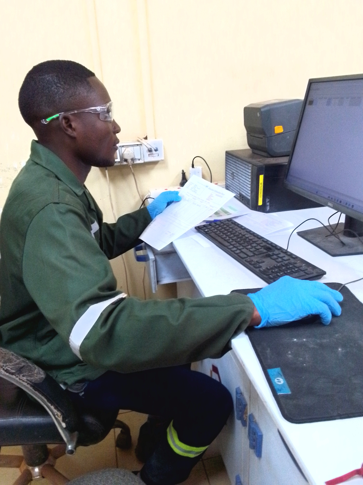
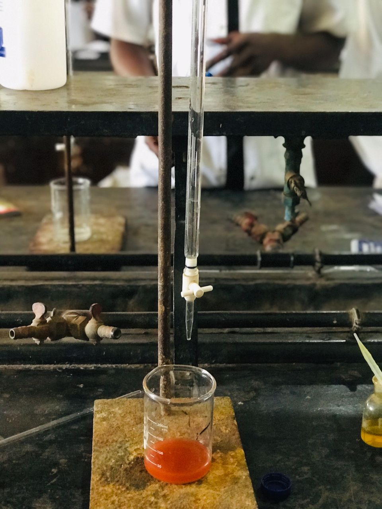

Détermination de l'indice de performance du laboratoire de Métalkol
Étude sur l'évaluation de l'indice de performance du laboratoire de Métalkol. Cas des analyses du K-Feed, M-Feed et P-Leach.
Voir plus →MES PROJETS
Voici la liste non exhaustive de quelques projets sur lesquels j'ai travaillé, en chimie, en développement web et en recherche. Chaque projet représente une étape de mon apprentissage et de ma progression.

Étude sur l'évaluation de l'indice de performance du laboratoire de Métalkol. Cas des analyses du K-Feed, M-Feed et P-Leach.
Voir plus →
Projet académique portant sur la production de l’éthanol par voie biologique à partir des matières premières riches en amidon , notamment le mais, les épluchures de pommes de terre et le riz. le projet explorait les principales étapes de transformation de la biomasse en éthanol, de la préparation des matières à la fermentation
Voir plus →Reproduction d'une landing page moderne et responsive avec HTML5 et CSS3, sans JavaScript. Projet réalisé dans le cadre de ma formation en développement web.
Voir plus →Maquette d'une page d'accueil Netflix sur Figma (Desktop) avec le header et la section hero. Travail axé sur l'UI/UX et le design moderne.
Voir plus →